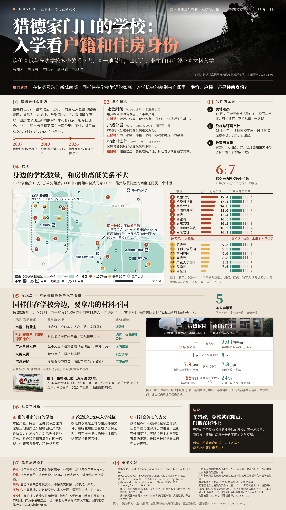

「猎德家门口的学校：入学看户籍和住房身份」/ Schools Next Door in Liede: Hukou and Housing Status Decide Entry。打磨说明见 第二轮海报分析.md 第八、九节。
两版共用标题「猎德家门口的学校：入学看户籍和住房身份」；补上作业要求的两个社区对比（猎德花园 vs 南国花园），把猎德改造留下的拆迁协议放进论证；发现一使用定稿的 A3 地图。分析见 第二轮海报分析.md。


四款方案使用同一份文字与数据（shared/content.js），只在版式、视觉语言和叙事顺序上不同。均为 9:16、1080×1920 画布，八个必需部分齐全，已通过溢出检查。点击缩略图查看高清 PNG。